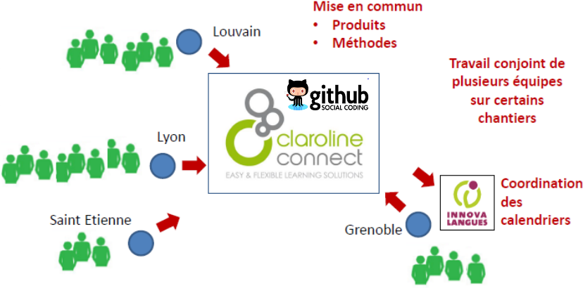

Présentation de l'ENPA
Rappels sur l'ENPA
Environnement
Numerique
Personalisé
d'Apprentissage
L'ENPA est :
Un environnement centré sur l'apprenant
- L'apprenant est acteur de sa formation
- Suivi détaillé de l'apprenant
- Personallisable
Tourné vers l'oral
- Mise à disposition d’outils spécifiques de production orale en continu et d’interaction
- Vidéo Actif Comparatif / Audio Actif Comparatif
- Forum vocal
Une plateforme sociale
- Favorisation du travail collaboratif
- Outil d'intéraction social (chat, messagerie, wiki...)
- Création du sentiment d'appartenance à un group
Mais aussi :
Une plateforme ouverte
- Un développement collaboratif et open source
- Basé sur le LMS Claroline Connect
Une plateforme moderne
- Prend en compte les nouvelles téchnologies
(HTML5, AngularJS...)
Une plateforme pour les supports d'aujourdhui
- Smartphones
- Tabletes
- Ecrans tactiles
- Tableaux blancs interactifs
Le but
- Augmenter le taux d'exposition à la langue
- Diversifier les approches pédagogiques
- Création de parcours d'apprentissage guidés et tutorés
- Favoriser la formation en autonomie
- La mise en place de jeux d'apprentissage
- La création du sentiment d'appartenance à un group
- Innover
Les équipes qui travailent sur l'ENPA sont :
Une équipe de cordinnation
- Cordination / Prise de décision
Une équipe didactique
- Création de contenu / Importation
Une équipe informatique
- Développement / Infrastructure
Une équipe administrative
- Gestion financière Logistique
Une équipe usages
- Formation / Tests / Remonté du bugs
L'équipe informatique
- 4 Développeurs
- 2 Stagières informatiques
- 1 Résponsable du développement
Arnaud Bey
- ENPA / Symfony2 / Claroline Connect / SELF
Axel Penin
- ENPA / Symfony2 / Claroline Connect / AngularJS
- Spécialisé dans la géstion des parcours pédagogiqes au sein de l'ENPA
- Migration des données
Eric Vincent
- ENPA / Symfony2 / Claroline Connect / SELF
Patrick Guillou
- ENPA / Spécialiste du son et de la vidéo pour le web
Donovan Tengblad
- Résponsable des développements / Infrastructure
- Spécialiste du développement open source
Stagières
Louis Amore
- Dictionnaire API
- Game2Learn
Mahmoud Charfeddine
- Forum Audio
Les chantiers en cours :
Développement de l'ENPA
- Développement du socle téchnique
- Création du composant "Parcours"
- Consolidation de l'infrastructure
4 lots pédagogiques en phase de prototypage
- THEMPPO : Thématique Prosodie et Production Orale
- Métronome / Métronome avancé
- AAC / VAC
- Outil annotation de text
- COCA : Compréhension de l’Oral Conception et Assistance
- Outil de marquage sonore
- SELF : Système d’Evaluation en Langues à visée Formative
- GAMER : Gaming Applications for Multilingual Educational Resources
Socle téchnique Claroline Connect

Socle téchnique Claroline Connect
l'ENPA en ligne
Livraison d'une premiere version de production de l'ENPA
- enpa.innovalangues.net
- Mise en place d'un cycle de livraisons (environ une fois par mois)